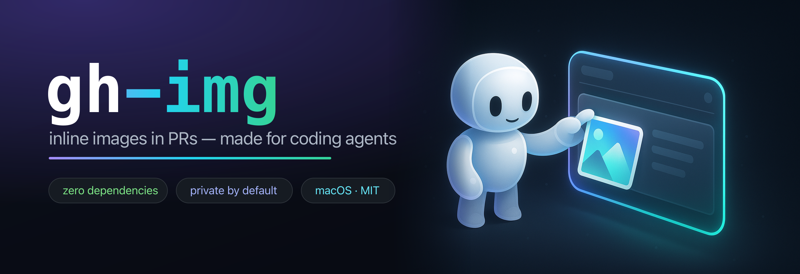

Let your coding agent paste screenshots into GitHub PRs.
A zero-dependency gh extension. Your AI agent runs gh img screenshot.png, gets a markdown line back, and drops it into the PR — no human drag-and-drop.

Images in PRs were the one thing agents couldn't do
There's no public API that mints GitHub's inline-image URLs — the web UI does it through a private upload flow when you drag a file into a comment box. So agents were stuck describing UI in prose. gh-img is a clean-room reimplementation of that flow: one command, one  line back, ready to paste into a PR body or comment. And because GitHub asset URLs inherit the repo's visibility, an image uploaded against a private repo stays private.
Why this one
🤖Made for agents
Ships an AGENTS.md and a Claude Code skill. The output is one markdown line, ready to paste into a PR.
📦Zero dependencies
Pure Go standard library — go.mod has no require block. A few hundred lines you can read end to end.
🔒Private by default
Assets inherit repo visibility. A private repo's screenshots render for collaborators and 404 for everyone else.
🛡️Safe & auditable
The session cookie touches only github.com and GitHub's upload storage — never written to disk, never logged.
Install
# as a gh extension (recommended) gh extension install theolundqvist/gh-img # or with Go go install github.com/theolundqvist/gh-img/cmd/gh-img@latest
Usage
# repo auto-detected from the git remote, session read from your browser gh img screenshot.png # explicit repo, multiple images (one line printed per image) gh img --repo owner/repo a.png b.png # any OS — pass the session token explicitly (no browser/Keychain) gh img --token <user_session> --repo owner/repo screenshot.png
Each upload prints one markdown line:

Platform support
| Path | macOS | Linux / Windows |
|---|---|---|
| Read session from browser | ✅ Arc, Chrome, Brave, Edge, Chromium | ❌ |
--token / GH_SESSION_TOKEN | ✅ | ✅ |
The upload flow is platform-independent; only reading the cookie from the browser is macOS-only (it uses the Keychain). Elsewhere, pass the token.